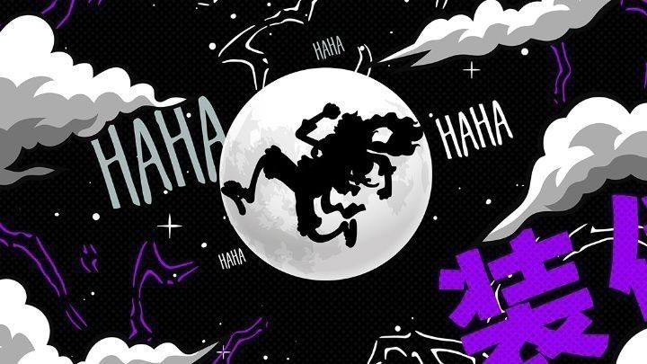
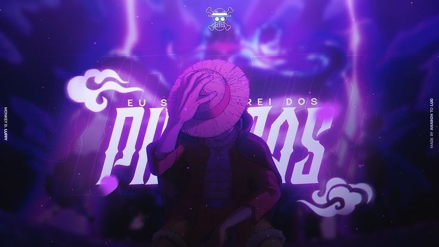

1. Overview & The Challenge
Traditional project management can often feel rigid and uninspiring, especially for long-term, ambitious projects. Project Grand Line was born from the idea of transforming the project lifecycle into an epic adventure. We set out to design a collaboration platform that uses the narrative of a pirate journey to make planning, task management, and milestone tracking more engaging and intuitive for creative teams.
The core challenge was to balance a fun, adventure-themed aesthetic with the serious functionality required for successful project execution, ensuring the metaphors enhanced, rather than hindered, usability.
2. Research & Ideation
Our research involved studying user engagement with existing project management tools (e.g., Trello, Asana) and identifying common pain points, such as low motivation and a lack of a clear, long-term vision. We explored the psychology of gamification and narrative-driven experiences to inform our design.
- Persona Creation: We developed personas for a "Captain" (project manager), "Navigator" (strategist), and "Swordsman" (developer/executor) to guide feature design.
- Metaphorical Mapping: We mapped key project management concepts to nautical/pirate themes: a project timeline became a "journey map," tasks were "bounties," and team members were the "crew."
3. Design Process & Key Features
The design for Project Grand Line focused on creating a visually cohesive and delightful user experience that leveraged our adventure metaphor without sacrificing clarity.
Journey Map: Navigating the Grand Line
The central feature is an interactive journey map that visualizes the entire project timeline. Milestones are represented as "islands," and tasks are the "paths" between them, giving the crew a clear sense of progress towards their goal.

The central journey map dashboard, visualizing milestones as islands.
Bounty Board: Task Management
We designed a dynamic "Bounty Board" (a Kanban-style task board) where tasks are represented as "wanted posters" with clear rewards and deadlines. This turned mundane task management into an engaging activity.
The Bounty Board, transforming tasks into wanted posters.
Crew Management: All Hands on Deck
A simple interface for assigning roles, tracking team progress, and facilitating communication. Each crew member's profile is a "pirate log" detailing their contributions and skills.
The Crew Management screen for assigning roles and tracking progress.
4. Outcomes & Learnings
Project Grand Line demonstrated the power of metaphorical design to improve user engagement and simplify complex processes. By wrapping familiar functionalities in a compelling narrative, we were able to create a product that felt both powerful and delightful to use.
- Enhanced Engagement: The adventure theme significantly increased team buy-in and motivation for tackling project tasks.
- Improved Clarity: The Journey Map provided a much-needed long-term perspective that was often lost in traditional timelines.
- Design with a Narrative: This project reinforced my belief that a strong, consistent narrative can be a powerful tool for designing memorable and user-friendly interfaces.
This project solidified my skills in UI/UX design, front-end development, and creative problem-solving. Future iterations could include features like "Log Pose" (to track individual progress) or "All Blue" (a final project archive).